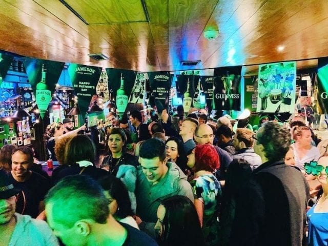

1 Monat Surfen, Sonne & Feiern mit Freunden – unser perfekter Sommer!
Unser 4-Wochen-Trip ist abwechslungsreich, bezahlbar und kombiniert City-Vibes mit Strand, Surf & Entspannung.
Basierend auf günstigen Flügen, Hostels und lokalen Transport. Alles geschätzt für 30 Tage:
Portugal bietet perfekte Wellen für Einsteiger & Fortgeschrittene – und das super günstig:
Preise:
Empfehlungen mit gutem Preis-Leistungs-Verhältnis & Social-Vibe:
Ø Preis: 18–25 €/Nacht. Buchung frühzeitig empfohlen, besonders im Sommer!
